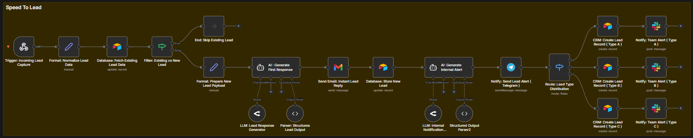

Speed to Lead System
Respond to every lead within seconds — not hours.

The Problem
The moment a lead submits a form or sends an inquiry, a clock starts ticking.
Every minute of delay reduces your chances of closing that deal.
- Responding within 5 minutes = 10x higher conversion
- Average business response time = 47 hours
By the time most businesses reply, the lead has already chosen a competitor.
Why This Matters
You are already paying for leads through ads, referrals, or organic traffic.
But slow response time silently kills conversions.
This system doesn't generate more leads — it helps you close the ones you already have.
How The System Works
- Lead is captured instantly from forms, ads, or WhatsApp
- Data is cleaned and structured automatically
- Lead is qualified based on your business rules
- Personalized response is sent instantly (email / WhatsApp)
- Lead is routed to the right person or team
- Internal alerts are triggered in real-time
Who This Is For
- Service-based businesses
- Agencies handling inbound leads
- Clinics (Dental, Aesthetic, etc.)
- Real estate teams
- Home services (HVAC, Plumbing, etc.)
Business Impact
If your current close rate is 12% and you improve response speed,
it can jump to 20–25%.
That means more revenue without increasing ad spend.
- Higher conversions
- No missed leads
- Faster response = stronger trust
Book This System →